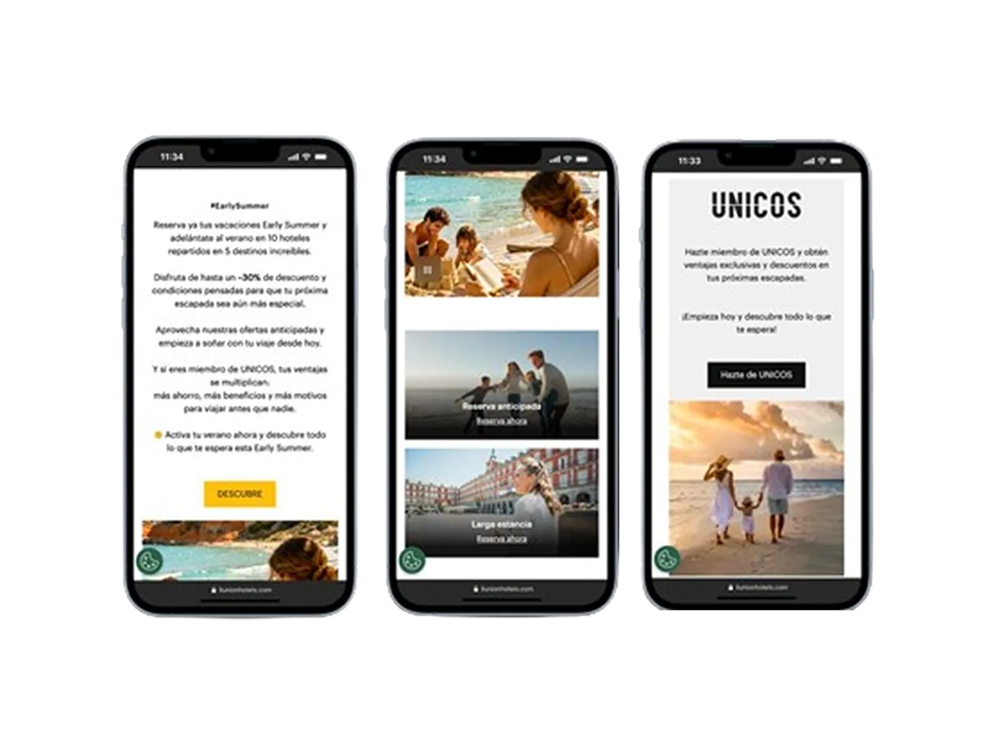
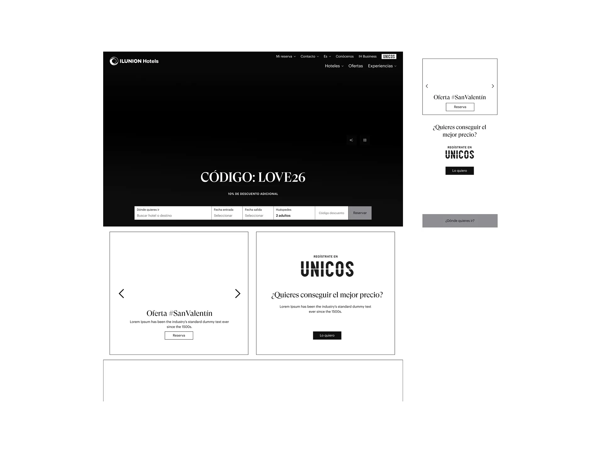
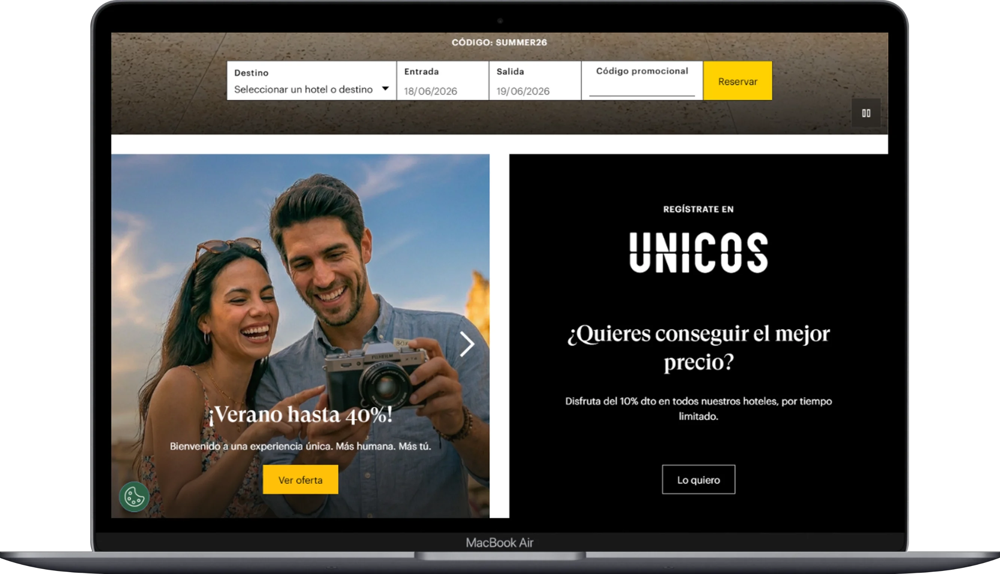
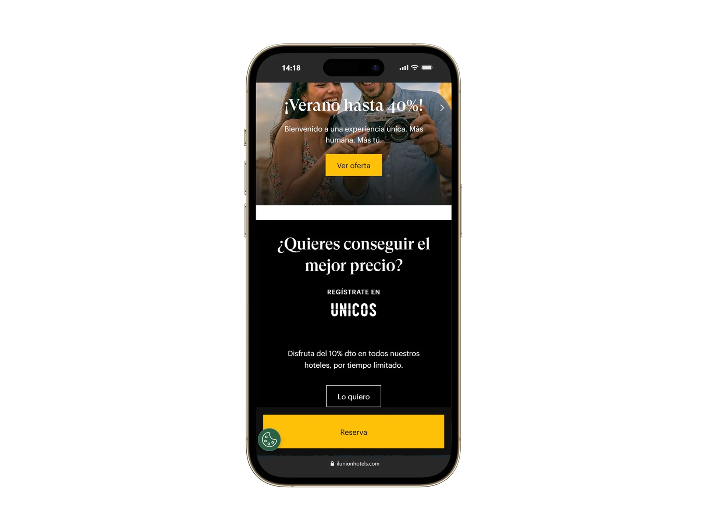

ILUNION CRO
de 3,36% a 6,5% de conversión
- Behavioral Data: 10.000+ logs de funnel (Adobe Analytics) + 250+ heatmap sessions (Clarity).
- Competitive Benchmarking: Análisis de precio, disponibilidad y CTA vs. cadenas y portales referentes.
- Strategic Diagnosis: Documento con 12 mejoras priorizadas por impacto + viabilidad AEM.
- Responsive Design: Desktop/mobile diferenciado, integrando constraints AEM como variables de diseño.
- Post-Launch Monitoring: Validación en staging, aprobación comité, observación y iteración continua.
Contexto
Tras migrar la web a Adobe Experience Manager (AEM) en septiembre 2025, la tasa de conversión cayó al 3,36%. Aunque la infraestructura técnica era sólida, el flujo de usuario presentaba problemas de fricción comercial.
Mi Rol
Única Product Designer del equipo, reportando directamente a Manager y Director Comercial de manera autónoma. Lideré el ciclo completo: diagnóstico con datos en vivo, propuesta visual iterativa en AEM y coordinación directa con desarrollo. Gestión de CRO continuo sin intermediarios de producto.
Problema
La maquetación inicial daba un excesivo protagonismo a banners promocionales del club de fidelidad, empujando el motor de reserva por debajo del primer scroll y dispersando a los usuarios con alta intención de compra.
Objetivo
Identificar los puntos de fuga del embudo de conversión y diseñar experimentos iterativos en AEM para elevar la conversión del 3,36% al 6,5% sin degradar el valor del programa de fidelización.
Cómo diagnostiqué el problema real
Cómo los datos informaron la decisión
• Competitive Benchmarking
• Strategic Diagnosis
• Accessibility Auditing
Evidence: 10K+ logs + 250+ sessions
Impact: +94% conversión
AOV lift: +12%
Research Methodology
🎯 Microsoft Clarity
Behavioral heatmaps, scroll maps, session recordings. Identified that only 15% of users passed the offers block.
Adobe Analytics
Funnel analysis, drop-off rates, segment performance. Measured post-launch impact: NPS, AOV, retention, mobile/desktop split.
Benchmarking
Competitive analysis: hotel chains, distribution portals. Where are price, availability, CTA in high-intent competitors?
User Context
Direct collaboration with commercial team. Understood the loyalty program value, not just the booking mechanics.

Finding 01 · Scroll map
15%
Solo el 15% de los usuarios superaba el bloque de ofertas en la home. El componente requería mayor interacción vertical que modelos referentes.
Finding 02 · Jerarquía visual
ÚNICOS
El programa de fidelización presentaba gran relevancia visual antes de mostrar las opciones directas de reserva, compitiendo con la intención de compra.
Análisis de Fuga · Scroll Map Home
Insights Principales · Clarity + Analytics
Embudo de Conversión CRO: Flujo de Reserva Directa
Acceso a la Home
El usuario entra con intención de compra desde campañas de marketing.
User lands on the homepage with high-intent from marketing campaigns.
¿Usuario Identificado?
Filtro condicional: ¿Es miembro de Club ÚNICOS?
Conditional check: Is the user a Club ÚNICOS member?
Mostrar Beneficios
SI: Precios exclusivos con descuento directo aplicado.
NO: Banner de alta rápida de conversión en 1 clic.
YES: Direct discounted prices.
NO: 1-click easy sign-up promotion card.
Checkout Directo
Envío del usuario al motor con fechas preestablecidas. Conversión exitosa.
Redirecting to search engine with dates prefilled. High conversion checkout.
Paso 1
Insight clave
Un usuario que llega desde paid media con intención de compra alta requiere comprobar disponibilidad y precio de forma directa. La narrativa de marca estaba bloqueando el inicio de la búsqueda.
Paso 2
Hipótesis
Reducir la fricción inicial priorizando el producto visible (oferta, precio, CTA) para acelerar el inicio de la búsqueda mejorará la conversión del embudo. Hipótesis sustentada analíticamente mediante scroll maps y benchmarking sectorial.
Paso 3
12 mejoras priorizadas
Traduje el diagnóstico en un documento estratégico con 12 mejoras, priorizadas por impacto directo en conversión y viabilidad técnica en AEM. 4 niveles de impacto. La propuesta fue aprobada en comité.
Ver lista de mejoras →Paso 4
Decisión final
ÚNICOS no se eliminó: se integró como componente de valor secundario que asiste al usuario sin interferir en la búsqueda. La restricción de AEM (sin CSS diferencial por dispositivo) se resolvió reordenando la jerarquía estructural de los componentes.
"Reducir la fricción inicial priorizando el producto visible —oferta, precio, CTA— para acelerar el inicio de la búsqueda mejorará la conversión del embudo."
Decisión ejecutada: ÚNICOS se reordenó como componente secundario dentro de los constraints de AEM, sin eliminarlo — el buscador y la oferta directa pasaron al primer fold.
Del wireframe
al resultado final
A partir de los wireframes iniciales definí la propuesta visual final, la jerarquía de contenidos, el sistema de componentes y la adaptación responsive para desktop y mobile. Los constraints técnicos de AEM no frenaron la solución; los integré como parámetros de diseño.



Estructura
Definí la arquitectura de la información y la disposición de los bloques clave.
Diseño visual
Apliqué identidad visual premium reforzando la jerarquía y el contraste.
Adaptación responsive
Ajusté la experiencia para desktop y mobile priorizando usabilidad y conversión.
Sistema de componentes
Diseñé componentes reutilizables para asegurar consistencia y escalabilidad.
Integración de marca
Integré el diseño dentro del ecosistema digital de ILUNION Hotels.
INTEGRACIÓN DE IA EN RESEARCH Y AUDITORÍA DE DATOS — Optimización CRO basada en datos cuali-cuanti
Auditoría de Logs (MCP)
Conexión de Claude mediante MCP SQL a bases de datos de Adobe Analytics para procesar, limpiar y filtrar 10,000+ logs del funnel de reservas post-migración, localizando caídas exactas.
Connecting Claude via MCP SQL to Adobe Analytics to pull, clean, and filter 10,000+ logs from the reservation funnel post-migration, isolating checkout drop-offs.
Clustering de Clarity
Ingesta automatizada de 250+ transcripciones cualitativas de Microsoft Clarity a través de LLMs para categorizar fricciones en el flujo de selección de habitaciones en tiempo récord.
Ingesting 250+ Microsoft Clarity qualitative session logs into Claude to automatically categorize layout friction points during the room selection process.
Variantes de Microcopy
Generé 15 variantes bilingües de microcopy para llamadas a la acción en pruebas A/B usando prompts estructurados con restricciones de longitud de caracteres de AEM.
Generated 15 bilingual variants of microcopy call-to-actions for A/B tests using structured prompts bounded by AEM character length constraints.
Implementación
Trabajé directamente con el equipo de desarrollo en entorno staging, revisando el comportamiento real del componente en la plataforma en lugar de entregar especificaciones para que alguien las interpretara. Saber qué estás mirando en staging, entender por qué un componente se rompe en un breakpoint y proponer la corrección correcta sin pedir otro sprint.
La propuesta se presentó en comité interno y se aprobó para lanzamiento a producción.
Aprendizaje post-lanzamiento
Tras el lanzamiento, los datos de Clarity mostraron algo inesperado: en mobile, los usuarios deslizaban sobre el selector de fechas en lugar de hacer clic. El patrón de interacción táctil no era el que habíamos diseñado.
Lo detecté, lo documenté y coordiné el desarrollo de la interacción de swipe a posteriori. No fue un fallo de diseño: fue el proceso funcionando como debe. La diferencia entre hacer una entrega y hacer producto es exactamente esta: seguir mirando después de publicar.
Las cifras representan métricas del canal directo y analítica agregada via Adobe Analytics, Power BI y Microsoft Clarity. No incluyen información financiera sensible de la empresa.
500+ assets generados con IA — Responsable de imagen comercial de 32 propiedades. Coordinación de marca, briefs, generación de contenido visual y guiones con Vertex AI · Gemini · Figma, manteniendo consistencia de marca y estándares de calidad en todo el canal directo.
500+ AI-generated assets — Commercial image owner for 32 properties. Brand coordination, briefs, visual content generation and scripts using Vertex AI · Gemini · Figma, ensuring brand consistency and quality standards across the direct channel.
Data First
El brief decía "optimiza el bloque promocional". Los datos decían que el problema era de jerarquía. Aprendí a profundizar en los datos analíticos antes de iniciar la conceptualización visual.
Launch ≠ Finish
El comportamiento de swipe en mobile detectado post-lanzamiento reforzó que la observación analítica activa y el mantenimiento de producto son fases esenciales para asegurar la madurez de cualquier desarrollo digital.
Constraints Create Design
Las limitaciones de AEM fueron tomadas como variables creativas, guiándonos a resolver el orden visual estructuralmente y fortaleciendo la adaptabilidad del diseño final.
Business Language Matters
Colaborar directamente con comités directivos, tecnología y marketing exige fundamentar el diseño en impacto transaccional y objetivos del negocio. Lograr esa alineación es lo que impulsa el éxito de los productos digitales.